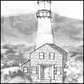
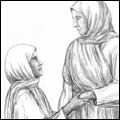

114 items in 15 title sections:
A |
 |
February 15, 2003 | |
| Adventures in the Land of Canaan | Robert L. Berry, 1924 | Sanctification | |
"All things" means all things. The Christian who gives up all is certain of God's continual care and protection. He cannot expect to escape trouble or trial or temptation; but he is kept in these things.... They may be hurt... but they will sail on in peace in God. | ||
November 15, 2004 | ||
| A Fundamental Difference | W. H. Shoot | Compromise | |
But now these very same writers and preachers... have repudiated their own teaching and are wearing many of the things they formerly taught against. So, according to their own statements... "The devil has seduced them." | ||
April 4, 2004 | ||
| A Hive of Busy Bees | Effie M. Williams, 1931 | Story | |
"I have been thinking about another kind of bee," said Grandma. "Do they sting, like the bees in the orchard?" asked Joyce, with a little shiver. "Their stings are much sharper," answered Grandma, "and the pain lasts much longer. There is a hive full of these bees." | ||
 |
March 10, 2005 | |
| A Neighborhood Awakening | Charles E. Orr | Bible/Word | |
Mr. Works—I am satisfied to go on in my way. Mr. Truman—I could have taken my way long ago, but I want to find the Bible way. Mr. Wright—Jesus says, "I am the way." Taking Christ is the only way to heaven. | ||
 |
October 9, 2004 | |
| A Peep Behind the Scenes | Amy C. Walton, 1877 | Story | |
"Rosalie," said her father.... "Come along!" So Rosalie had to leave her poor mother. And instead of singing the soothing words of the hymn, she had to repeat again and again the foolish and senseless words which had fallen to her share in the new play. | ||
 |
March 15, 2004 | |
| A Religious Controversy | Charles E. Orr | Truth | |
Mr. W.—If his Bible says we can live in this world without sin, it's not like mine. Mrs. W.—I'll get your Bible and let you read.... Turn and read Acts 4:12. Mr. W.—Is Acts in the Old Testament or the New? | ||
May 31, 2004 | ||
| Around Old Bethany | Robert L. Berry, 1925 | Story | |
It was... an unwise thing to say at that particular time. Robert Davis was young, and full of zeal. Most probably he should not have uttered those words. Peter Newby was powerfully affected. He felt as if his character had been scandalized before the whole crowd. | ||
 |
November 19, 2002 | |
| A True Story in Allegory | Lottie L. Jarvis | Compromise | |
Many times had the Apostasy family tried to destroy that most annoying trumpet, but... they had never been able to do aught but, for a season, to in some way deceive the trumpeters, for a short time, into the idea that it was no longer necessary. | ||
B |
 |
March 6, 2004 | |
| Beautiful Girlhood | Mabel Hale, 1922 | Guidance | |
Girlhood is the opening flower of womanhood. It has charms all its own. The wonderful change from the child to the woman, the marvelous blossoming of young, healthy girlhood, will ever be God's great miracle in life's garden. Like a half-open rose is girlhood. | ||
January 18, 2003 | ||
| Bible Humility | Jacob W. Byers | Humility | |
Let us remember that this Bible humility cannot be made by human effort. It is divine, and furnished us as freely as salvation.... let us be sure first that we have a clean heart; then put on the true Bible humility, which can only be found under the mighty hand of God. | ||
August 27, 2004 | ||
| Birth of a Reformation | Andrew L. Byers, 1921 | Biography | |
My mother had been reading The Trumpet and had formed the opinion of Brother Warner that he was a great and wonderful man. So when she met him she exclaimed, "And is this Brother Warner!" His reply was, "Yes, and he is the least man you ever saw." | ||
C |
 |
June 6, 2004 | |
| Christian Conduct | Charles E. Orr, 1903 | Truth | |
Christianity brings a heaven to the home as well as in the public life. Christianity is Christ in the heart, and where Christ is, there is heaven; consequently a Christian has a heaven within him, and he has this heaven at home as well as abroad. Praise God! | ||
 |
May 2, 2004 | |
| Considering Marriage? | Margaretta Kennedy | Marriage | |
Dear young people, let God direct you in choosing a companion. You cannot of yourself choose the right companion. You may think that a certain one is the only one who can give you the love and happiness you desire, but it may be that love will grow cold. | ||
April 24, 2004 | ||
| Courtship and Marriage | Ostis B. Wilson, 1976 | Marriage | |
Marriage is a lifetime thing.... It should never be entered into thoughtlessly, recklessly, or hastily; but thoughtfully, prayerfully, reverently, discreetly, and in full consideration of the purposes for which God ordained it. | ||
D |
January 16, 2005 | ||
| Divorce and Marriage | James B. Graham, Jr. | Marriage | |
When we viewed the blighting effects of divorce... and became convicted that we and others had spoken all too glibly about "Scriptural grounds for divorce" without any very careful study... we set ourselves to discover the truth. | ||
June 29, 2003 | ||
| Divorce and Remarriage | Richard J. Erickson, 2003 | Marriage | |
In understanding these scriptures, it is important to understand who Paul is addressing, and also when he is giving commands of the Lord, and when he is giving counsel. The context makes so much difference in meaning, whatever the language. | ||
F |
November 6, 2004 | ||
| Food for Lambs | Charles E. Orr, 1904 | Guidance | |
Jesus, the true shepherd, came seeking for you, and now that you have given yourself to His loving care, always confide in Him and yield to His guidance. Ever keep your hand in His and follow where He leads, and your life will be full of joy. | ||
G |
 |
July 23, 2005 | |
| God or a System: Which? | Lottie L. Jarvis | Church | |
To love God personally and perfectly will produce the most perfect obedience and the most perfect heroism, and the most perfect destiny of which the soul is capable.... to obey Him with supreme personal loyalty, is our only true holiness and service. | ||
H |
January 17, 2004 | ||
| Helps to Holy Living | Charles E. Orr | Holiness | |
Who among us has an eye to see all that belongs to the Christian life? Are there not yet some glorious things lying out beyond the boundary of our vision? Oh, for the open eye to see the wondrous things God has prepared for them that love Him! | ||
 |
October 23, 2004 | |
| Hero of Hill House | Mabel Hale, 1922 | Story | |
Austin's brow clouded as he heard Doyle's wish.... It did not seem fair, after the sacrifice he had made all these years... that the boy should care more for his father and this unknown mother than he did for his home and the one who had made it possible. | ||
 |
May 25, 2004 | |
| How John Became a Man | Isabel C. Byrum, 1909 | Biography | |
He had not meant to be wicked, but he suddenly realized that his life had been wasted; and he concluded that he was not ready to meet Christ. But John believed that Christ would come to the earth, and he felt that he would give anything to be ready to meet Him. | ||
 |
February 1, 2005 | |
| How to Live a Holy Life | Charles E. Orr | Holiness | |
The soul intertwined with the meek and lowly life of Jesus will form a character of deep piety and sincere godliness. The daily life should be intertwined with the life of Jesus. Let there be no reaching out for anything outside of Him. | ||
November 16, 2002 | ||
| How to Resist the Devil | F. J. Perryman | Warfare | |
God can do no more than He has done. At the cross He judged the devil and overthrew him and his hosts.... Not only are we saved from sin on account of that death, but we are also saved from Satan. | ||
J |
 |
December 27, 2003 | |
| Just Mary | Effie M. Williams | Biography | |
When the train pulled out from the station, taking Elsie and little Mary back to their own home, he laid his head on his mother's shoulder and sobbed as only a twelve-year-old boy can sob. Peachy had found a place in his heart which no one else could fill. | ||
M |
 |
June 28, 2003 | |
| Musical Instruments and Worship | Archie Souders | Worship | |
This subject of music in the church is surely a spiritual subject. Now, dear reader, get your Bible out before you read any farther, as this question can only be answered by the Word of God. I am going to deal wholly with God's Word. | ||
 |
April 17, 2004 | |
| Must We Sin? | Daniel S. Warner | Victory | |
Bro. F.—Well... I should like to have a talk with you. They tell me that you sanctified folks claim to be free from sin, and I can't believe that, for the apostle Paul confessed that he had sin dwelling in him, and I don't think we can get better than he was. | ||
N |
August 30, 2003 | ||
| Number 10 (December 2000) | Timeless Truths Publications, 2000 | Trust | |
Don't you know that there are lots of times it is hard to be cheerful and kind? It is like a stormy winter day when plants don't want to grow.... But Jesus has a way for us to "sprout" on those stormy winter days. | ||
February 7, 2004 | ||
| Number 10 (Summer 1999) | Timeless Truths Publications, 1999 | Trust | |
I am satisfied that God knew we would not know what we were doing. He meant for us to voluntarily trust Him by turning from our own ideas and opinions and placing our hand in His hand for guidance. He designed the thing so that we would absolutely need a guide. | ||
 |
September 11, 2004 | |
| Number 10 (Summer 2004) | Timeless Truths Publications, 2004 | Decision | |
"Can I find, do you think, one answer, one description, which will suit you all—fisherman, mothers, boys and girls, artists, merchants, gentlemen, the old man and the little child? Yes, I can.... Each of you, without exception, might write this—I am a servant. | ||
 |
February 15, 2004 | |
| Number 11 (Fall 1999) | Timeless Truths Publications, 1999 | Obedience | |
We also each have the town in front of us that God calls us to walk in. What is the town? It is God's way. It seems dark, uncertain, not promising a light, easy life. It calls us to give up our choice things—the things, people, places that are most dear to our hearts. | ||
September 8, 2003 | ||
| Number 11 (February 2001) | Timeless Truths Publications, 2001 | Truth | |
Though Rosie tried to enjoy playing with her little brother and sister, she could not. Every little bang or call made her jump and sent her heart into a flutter. What if someone had seen her when she had stepped on the dresser this morning and knocked the pitcher off? | ||
 |
January 22, 2005 | |
| Number 11 (Winter 2005) | Timeless Truths Publications, 2005 | Humility | |
Jesus was quick to give the credit to God. Although He was God Himself... He quickly and reflexively gave the credit for virtue to His heavenly Father. It is this set of heart and mind that avoids the pride of life and lives in humble reliance upon God. | ||
September 27, 2003 | ||
| Number 12 (April 2001) | Timeless Truths Publications, 2001 | Grace | |
"There he comes again," said Annie. "He walks this way and seems to be looking for something. He walks slow, and is without his hat. He puts his hand to his head, as if he did not know what to do. Oh, sister, he has gone in again; what shall we do?" | ||
December 1, 2005 | ||
| Number 12 (Summer 2005) | Timeless Truths Publications, 2005 | Church | |
It is all uphill to the top of the mountains. Also, for people to flow together in this manner, they must melt. There are a whole lot of things that can only work in the Bible pattern if the melting occurs. | ||
 |
October 6, 2003 | |
| Number 13 (June 2001) | Timeless Truths Publications, 2001 | Warfare | |
It stood before her now, tall and mysterious. What could be so dangerous about it? Broken bricks lay piled in the grass near the window, and as Rosie stepped closer she felt a cool breeze brush her face. What treasure was hidden behind those dark walls? | ||
October 12, 2003 | ||
| Number 14 (September 2001) | Timeless Truths Publications, 2001 | Sin | |
Juan was impatient. "Coco, you must hurry or we will never get done," he said sharply. But the little burro only plodded. "Get off and walk, Lucita," Juan said. "You are probably too heavy for him when it is so steep." So Lucita walked behind, holding the red scarf tightly. | ||
October 22, 2003 | ||
| Number 15 (November 2001) | Timeless Truths Publications, 2001 | Trust | |
"I don't think you really want this kind of doll, Precious. Even though it's cheap, it's not worth the money." Self-pity tears filled Precious' eyes. "But Mama... I love her, I really do. I don't care if she's got a broken finger. And I have the money... she's on sale...." | ||
October 27, 2003 | ||
| Number 16 (December 2001) | Timeless Truths Publications, 2001 | Sin | |
Daniel pretended not to notice when Chad... began looking over the new Pigeon-Raiser's Guide. I really don't care, anyway, he told himself, and began poking at the fire. Dad sat down in a nearby chair. "So, Daniel, how did your pigeons like their new loft?" | ||
 |
November 10, 2003 | |
| Number 17 (February 2002) | Timeless Truths Publications, 2002 | Trust | |
"I don't like waiting," Edward said. "Why can't we try the cookies now, Alice?" "They're not ready yet," his sister said, sliding the tray in the oven. Grandpa chuckled from his easy chair. "How about a story while we wait for them to bake?" | ||
 |
December 6, 2003 | |
| Number 18 (April 2002) | Timeless Truths Publications, 2002 | Warfare | |
Precious felt very pleased with herself when she had finished the sleeve. "I don't think I need Mother Matron's help at all.... It will be a surprise to show her how much I've done."... The fabric didn't meet at the edge, but a quick scissors snip took care of that. | ||
December 15, 2003 | ||
| Number 19 (June 2002) | Timeless Truths Publications, 2002 | Obedience | |
"She can draw cool people, too," said Janice. "Last week she won a prize in our church fair." "I'm going to be a movie artist when I grow up," said Juliann. "Hey Jan, can I see your new movie-star Barbie?" Janice pulled a shiny box out of the closet. | ||
 |
December 4, 2002 | |
| Number 1 (June 1999) | Timeless Truths Publications, 1999 | Trials | |
But Irene didn't listen. "Hurry now! Mom said she needed us to get the weeding done this afternoon. You can pick flowers later." Rosie turned quickly to hide the tears that were rolling down her cheeks. Irene didn't understand! It just wasn't fair! | ||
January 25, 2003 | ||
| Number 1 (November 1996) | Timeless Truths Publications, 1996 | Patience | |
There are two different ways to wait for something. You can nag and complain.... The other way is to wait patiently until it is finished. If it's some long-term thing it helps not think about it constantly. This is not easy to do unless you ask the Lord to help you. | ||
 |
July 19, 2003 | |
| Number 1 (Winter 2000) | Timeless Truths Publications, 2000 | Salvation | |
The Bible requires a pure heart—a failure on your part to get the Bible promise fulfilled in you will result in you missing heaven, for "blessed are the pure in heart: for they shall see God," and "holiness, without which no man shall see the Lord." | ||
 |
December 20, 2003 | |
| Number 20 (August 2002) | Timeless Truths Publications, 2002 | Giving | |
A scientist is someone who studies the world God has made. Scientists want to find out how and why things work.... So let's be a scientist and study things in the King's Garden today!... Scientists begin with a question. Our question today is: What can weeds tell us? | ||
 |
August 12, 2003 | |
| Number 21 (October 2002) | Timeless Truths Publications, 2002 | Contentment | |
"Don't you think it would be better to keep busy trying to serve others, rather than getting into trouble for being a pest?" Grandpa said to Edward, his eyes twinkling. "God is pleased when we do hard things patiently. He will help us be kind when others are cross." | ||
January 10, 2003 | ||
| Number 22 (January 2003) | Timeless Truths Publications, 2003 | Humility | |
Daniel was tired of his talking, and disappointed that he had spotted the ripped bark first. "Just be quiet a bit," he grumbled. "You're scaring all the animals." Just then he noticed a large, rounded shape in the snow and pulled out his track guide. Could it be...? | ||
 |
March 1, 2003 | |
| Number 23 (February 2003) | Timeless Truths Publications, 2003 | Responsibility | |
God made the world and all that is in it for a reason. He made us on purpose. When I do something "on purpose," I have a plan and a reason to do it. God has a plan and a reason for us. He wants us to walk with Him and be with Him, just like Jesus was. | ||
May 3, 2003 | ||
| Number 24 (April 2003) | Timeless Truths Publications, 2003 | Obedience | |
"You've ruined it!" Justin screamed, and threw himself down to pound the dirt. Teddy was crying and Rochelle was calling for help. Justin didn't listen. The go-cart that he had worked so hard to build was smashed! Tears blinded his eyes. | ||
July 13, 2003 | ||
| Number 25 (July 2003) | Timeless Truths Publications, 2003 | Assurance | |
"Rats. They are chewing on something," said Precious. "I'm going to see what it is." She turned the door handle and poked her head into the dark room. The scratching stopped. "Get a flashlight," she whispered to her brother. | ||
 |
September 21, 2003 | |
| Number 26 (September 2003) | Timeless Truths Publications, 2003 | Love | |
Terry noticed a brush pile next to the lawn. There were probably snakes living in it, Terry thought.... "Miss Richardson," said Terry, "there are snakes in that pile of brush!" "Terry," Miss Richardson replied, "the only snake around here is the one in your ear!" | ||
 |
November 18, 2003 | |
| Number 27 (November 2003) | Timeless Truths Publications, 2003 | Love | |
The bicycle seat just fit them both, but it was hard to keep balanced. It wavered back and forth down the driveway.... Suddenly the pedals jammed and the bike screeched and fell over. Rosie's elbow hurt, but Emma was screaming like her leg was broken. | ||
January 14, 2004 | ||
| Number 28 (January 2004) | Timeless Truths Publications, 2004 | Giving | |
Determine to always do the right thing, for Jesus. When you feel like stopping, do a little more. Give all your problems and the praise of others to Jesus for baking. When the trials of disappointment and troubles come to test you, pour on a little unselfishness. | ||
 |
March 22, 2004 | |
| Number 29 (March 2004) | Timeless Truths Publications, 2004 | Kindness | |
I think this little bunny has a good lesson to teach us. If we pulled a baby rabbit out of the pile of fur, it would be sure to crawl right back in. Even though it is only a tiny blind baby, it knows to stay where it is warm and safe. | ||
 |
April 12, 2003 | |
| Number 2 (August 1999) | Timeless Truths Publications, 1999 | Giving | |
As Daniel watched her turn sadly away, his memory verse came back to mind.... If Rosie had the new pole, he thought, I would want her to share with me. Daniel looked at his little fish and bit the corner of his lip. Jesus would want me to share. | ||
 |
February 8, 2003 | |
| Number 2 (Spring 1997) | Timeless Truths Publications, 1997 | Kindness | |
It is easier to be kinder to our friends.... But the Lord has grace for us to get along with the people we do live with.... We may think, why does someone in my family always have to irritate me? But remember, that if we never had any trials we would never grow. | ||
|  | July 27, 2003 | |
| Number 2 (Spring/Summer 2000) | Timeless Truths Publications, 2000 | Church | |
The unity that Paul and Apollos had was not a negotiated one.... The essence of that unity came from each being in unity with God. This produced a oneness in Him that did not depend on careful posturing and positioning with each other. | ||
 |
May 9, 2004 | |
| Number 30 (May 2004) | Timeless Truths Publications, 2004 | Obedience | |
Taylor lived on a farm. He and his brother, Antonio, had the greatest places to play! There were bushes and trees and blackberry vine thickets. And all over were little paths that Taylor and Antonio had made. "Don't get in the poison oak plants," Taylor said. | ||
 |
August 1, 2004 | |
| Number 31 (July 2004) | Timeless Truths Publications, 2004 | Examination | |
How do you think you can show that you love God? Not by saying things with your lips. Anyone can do that. Think instead about saying things with your hands and feet today. Will you give God your time and energy and please Him in every way you can? | ||
October 16, 2004 | ||
| Number 32 (October 2004) | Timeless Truths Publications, 2004 | Humility | |
Daniel felt trapped. If he said Jesus was his Captain, Dad would ask why he hadn't been sharing. But it didn't seem fair to share a personal refuge. He didn't want to be selfish, really. "I don't know," he muttered. "I just wanted to be by myself." | ||
 |
January 1, 2005 | |
| Number 33 (December 2004) | Timeless Truths Publications, 2004 | Light | |
"They must be real heroes," said Edward. Grandpa chuckled. "Heroes? I should say that they were ordinary people that found an extraordinary source of power. But God has that same power to overcome your enemies, if you will put your faith in Him." | ||
March 1, 2005 | ||
| Number 34 (February 2005) | Timeless Truths Publications, 2005 | Forgiveness | |
Suddenly the quiet of the room was broken by the bark of Fred's dog, Watch. Slave hunters had tracked us to this very place! ...The rough men searched the house below. The peace of the night had disappeared and danger was very near. | ||
 |
May 19, 2005 | |
| Number 35 (April 2005) | Timeless Truths Publications, 2005 | Prayer | |
"Candy?" Spiteful looked surprised. He pulled the silver case out of his pocket and turned it over in his dirty hands. "Open it like this, see?" Precious said, unsnapping the case. The peppermint stick rolled out.... "It's for you. I hope you like it," Precious said quietly. | ||
 |
December 17, 2005 | |
| Number 36 (September 2005) | Timeless Truths Publications, 2005 | Humility | |
Daniel rolled his eyes and walked off. I don't like Robert and I don't want to be his friend, Daniel thought. I guess I'm really prejudiced. Maybe if I found a box of Robert's drawings I would burn them. Hitler burned people's things. Daniel frowned. | ||
 |
February 1, 2006 | |
| Number 37 (December 2005) | Timeless Truths Publications, 2005 | Perseverance | |
Snip! Snip! The proud vine is pulled off the wall. There, I have cut it down and it won't bother our raspberries again! you say. You must not know brambles. Cutting it down is not enough—we must now get out our shovels and dig out the root or it will grow back. | ||
January 27, 2004 | ||
| Number 3 (Autumn 2000) | Timeless Truths Publications, 2000 | Faith | |
"The fool hath said in his heart, There is no God."... Someone has stated that the fool says this in his heart without the full consent of his mind, for if it be difficult to prove by human reasoning that there is a God, it is utterly impossible to prove that there is not. | ||
April 26, 2003 | ||
| Number 3 (October 1999) | Timeless Truths Publications, 1999 | Work | |
Rosie felt a small smile creep onto her face. Maybe this would be fun after all! She quickly picked up a jar and looked at its dusty bottom. "And we must remember," she said, as most grown-up as she could, "that the king doesn't like one speck of dirt!" | ||
February 22, 2003 | ||
| Number 3 (Summer 1997) | Timeless Truths Publications, 1997 | Trust | |
The Lord doesn't do things under pressure. He just refuses to. We aren't going to help the Lord by trying to hurry things up a bit. The longer we try to "make it work," the longer the Lord leaves us alone with our problem. | ||
 |
May 10, 2003 | |
| Number 4 (December 1999) | Timeless Truths Publications, 1999 | Love | |
As he helped his father get ready for the feast, Ethan kept wondering who the Rabbi was after all. While they were working on their booth, he got up the courage to ask, "Father, do you really think the Rabbi is the Messiah? Is he our conqueror, or not?" | ||
 |
March 3, 2003 | |
| Number 4 (Fall 1997) | Timeless Truths Publications, 1997 | Trials | |
God is always giving us trials that are open doors. Every single trial we have is a chance to be an example, to show someone what Christ was like. Oh, dear sisters, take those privileges to be examples seriously! They are so important! | ||
|  | February 23, 2004 | |
| Number 4 (Winter 2001) | Timeless Truths Publications, 2001 | Sanctification | |
The Holy Spirit brings us to this—it is far beyond the capacity of man to enter into this rest on his own. We can resist and limit God.... Or we can allow the Holy Spirit to have His way and take us from the wilderness into this spiritual land of Canaan. | ||
May 17, 2003 | ||
| Number 5 (February 2000) | Timeless Truths Publications, 2000 | Contentment | |
If seedlings don't get light, they will start looking for it, because light is what helps them grow. In the Bible, Jesus is called our Light. If we don't come close to Him each day, we won't grow in our hearts like we should. | ||
March 1, 2004 | ||
| Number 5 (Spring/Summer 2001) | Timeless Truths Publications, 2001 | Consecration | |
It takes time for God to teach you His voice and how to find the mind of the Lord. Look to Him now about the little decisions of life. Don't rush ahead with your own desires and wishes. Wait on Him. Pray for His direction.... He will prepare you if you let Him. | ||
 |
March 8, 2003 | |
| Number 5 (Winter/Spring 1998) | Timeless Truths Publications, 1998 | Submission | |
How many of us, when we had planned to have a day in town, but have to stay to watch our little siblings, say, "Sure, Mama, whatever works out is fine with me"? Or, when [some plan] doesn't work out... you don't even question why it couldn't be made to work? | ||
 |
May 24, 2003 | |
| Number 6 (April 2000) | Timeless Truths Publications, 2000 | Decision | |
The next day a strange thing happened. God had always taken care of them so that they always had food to eat, even during the hard times of the war. But now no money came in the mail and hardly any food was sent.... Soon they were very hungry. | ||
 |
November 12, 2002 | |
| Number 6 (Spring 2002) | Timeless Truths Publications, 2002 | Humility | |
Acknowledgment of truth is the first and vital step to getting help. This truth runs contrary to the philosophy of influence... the skill of easing people into a better condition. The way of the cross is the way of acknowledgment—it is a stark confrontation. | ||
April 5, 2003 | ||
| Number 6 (Summer 1998) | Timeless Truths Publications, 1998 | Love | |
Love "endureth all things." What?... Does God really have grace for me to love my little sister who cut two big holes in a cross-stitch that took two years to complete?!... If He loved [the Jews who crucified Him], can not I find grace in my heart to love her? | ||
 |
December 13, 2002 | |
| Number 7 (Autumn 2002) | Timeless Truths Publications, 2002 | Sanctification | |
Making up your mind and setting your will, in themselves, are necessary to do the works of man; but, if you want to do the works of God, the work of God must be done in you first, in all its completeness. | ||
 |
March 29, 2003 | |
| Number 7 (Fall 1998) | Timeless Truths Publications, 1998 | Encouragement | |
I have found His way is best in my own life. When I commit all my thoughts and ideas, hopes and plans to God, how beautifully He works all things out than if I struggle in my own strength!... The Lord had led to me to higher ground to see what really matters. | ||
May 31, 2003 | ||
| Number 7 (June 2000) | Timeless Truths Publications, 2000 | Love | |
"Won't fight, huh." Eric gave his twisted arm a yank which brought another cry of pain from Johnny. "When I tell you to fight, you better fight! Or youll wish you had," he continued grimly. Peter laughed with glee. "Get him, Eric. He's too scared to fight!" | ||
 |
August 2, 2003 | |
| Number 8 (August 2000) | Timeless Truths Publications, 2000 | Examination | |
"Push," said Josh. Timothy sighed. He pushed Josh a little bit. "More," said Josh. Then a thought came to Timothy. If he pushed Josh very hard, Josh might get scared. He would cry. He would want to go to Mother. And Timothy could play by himself! | ||
 |
June 15, 2003 | |
| Number 8 (Spring 2003) | Timeless Truths Publications, 2003 | Church | |
God, in dealing with us, does not take away our humanity.... the work of God in the earth—His church overall and each members individual walk with God—can be a perfect blend of the Divine and the human if we allow the Lord to have His way. | ||
 |
September 13, 2003 | |
| Number 8 (Winter 1999) | Timeless Truths Publications, 1999 | Patience | |
I have just been thanking the Lord for helping me to choose Him completely in my youth and wait on the Lord for a companion. It surely pays! I was 29 before I married and the wait seemed so long then, but now it seems like nothing! I am so glad I waited on God. | ||
 |
November 4, 2003 | |
| Number 9 (Autumn 2003) | Timeless Truths Publications, 2003 | Victory | |
"Now unto him that is able to keep you from falling, and to present you faultless before the presence of his glory with exceeding joy." Do you believe this? Do you really believe that God is able to keep you from falling and to present you faultless? | ||
 |
August 22, 2003 | |
| Number 9 (October 2000) | Timeless Truths Publications, 2000 | Decision | |
Precious... tossed on her crown of love, but didn't have time to adjust her veil of quietness.... Princess Kind-to-All had planned a party and Precious didn't want to be late. She bounded down the steps... and did not notice her ring fall to the floor. | ||
 |
November 29, 2003 | |
| Number 9 (Spring 1999) | Timeless Truths Publications, 1999 | Modesty | |
Take everything to the Word of God and measure it to see whether it be of God or man. If it doesn't line up... then we know that it isn't truth. What better guide do we have than the Word of God? We cannot go wrong if we bring everything and measure it to the Bible. | ||
O |
November 9, 2002 | ||
| Odors from Golden Vials | Charles E. Orr, 1912 | Prayer | |
Those who have been praying for years and have the closest intimacy with God have a desire to know still more about prayer. How little we yet know of God! It is true that He has taught us many glorious things of Himself... but there is much more to learn. | ||
March 30, 2004 | ||
| Only a Servant | Kristina Roy | Story | |
The sick landlady praised the servant, "He takes care of me like a son, and he is a wise man. He persuaded my husband to let him put up a stove in the kitchen.... Others barely do what they are told to; this one does the needed things without being told." | ||
P |
July 11, 2004 | ||
| Parent and Child | Jacob W. Byers | Responsibility | |
Dear parents, we hold the highest and most God-honored position in this world, and to a large extent hold in our hands the destiny of our own children.... Oh, that God may waken us to our important duties and opportunities!... We must grasp them now. | ||
 |
January 5, 2004 | |
| Paula the Waldensian | Eva Lecomte, 1940 | Story | |
My father looked at her searchingly, with that new tenderness which I had seen frequently lately.... "I believe," said Rosa, "that she'd be happy to give us her last piece of bread if there was occasion for it." "Yes, and her life also, if that was necessary." | ||
 |
March 1, 2006 | |
| “Probable Sons” | Amy Le Feuvre, 1896 | Story | |
"Uncle Edward... will you ask God to make Tommy come back home? His mother does want him so badly." "I will leave you to do that," was the curt reply. "Well, if you don't want to pray for Tommy, pray for God's probable sons, won't you? | ||
R |
 |
February 1, 2003 | |
| Remove Not the Ancient Landmarks | Ostis B. Wilson | Compromise | |
There has been a great cry... for liberty of conscience. But let us realize that this tendency generally runs into a liberal conscience, and there is a vast difference between a liberal conscience and liberty of conscience. | ||
November 22, 2004 | ||
| Riches of Grace | Enoch E. Byrum, 1918 | Story | |
My heart cries out, "What a mighty God! What a great and loving Father!" Counting my blessings, I find they so far outnumber my trials that it brings me real courage to press on, knowing that, as I do, grace will be given me to meet whatever may yet lie in my pathway. | ||
S |
December 1, 2004 | ||
| Sanctification | Jacob W. Byers, 1902 | Sanctification | |
Jesus requires the undivided heart and every affection. You cannot refuse him. He has done too much for you. He suffered without the gate that He might sanctify you with His own blood. He gave Himself... and now how can you withhold anything from Him? | ||
 |
December 28, 2002 | |
| Songs and Stories: Book 1 | Various, 2002 | Story | |
"Oh, Mother!... I never thought of that. Do kneel down with me, and ask God to forgive me, and help me to forgive Jack." So they prayed a long time; and when, at last, they rose from their knees, Willy looked as if he were at peace with all the world. | ||
 |
November 27, 2004 | |
| Songs and Stories: Book 2 | Various, 2004 | Story | |
"Everybody can't be like Christopher Columbus, Mama." "Maybe not, my dear boy, but everyone can imitate Christ. Wicked men... mocked Him, blindfolded Him, and smote Him in the face.... If you will pray to Christ, He will make you a brave, manly Christian." | ||
September 25, 2004 | ||
| Stories Worth Rereading | Various, 1913 | Story | |
"Why do you rub at the knives forever?" asked Mary. Mary was the cook. "Because they are in my corner," Georgia said, brightly. " 'You in your small corner,' you know, 'and I in mine.' I will do the best I can; that is all I can do." | ||
September 18, 2004 | ||
| Subdued | George D. Watson, 1924 | Humility | |
We must be subdued, not merely in our own opinion, not merely think ourselves subdued... but subdued so perfectly that the all-seeing eye of God can look us through, and the omniscient One knows that we are subdued. | ||
T |
 |
January 1, 2006 | |
| The Christian’s Secret of a Happy Life | Hannah W. Smith, 1875 | Sanctification | |
Today it is your happy privilege to prove, as never before, your loyal confidence in the Lord by starting out with Him on a life and walk of faith, lived moment by moment in absolute and childlike trust in Him. | ||
 |
May 21, 2004 | |
| The Deacon of Dobbinsville | John A. Morrison, 1920 | Story | |
As he lay thus... he was startled by the sight of a man's shadow on the side of the tent. He lay still and listened. Soon he heard low muttering voices a few rods from his tent. Still he listened. They drew nearer and nearer. Finally the mutterings became whisperings. | ||
 |
March 22, 2003 | |
| The Extraordinarily Appropriate Gift | Mark P. Spinks, 2002 | Jesus/Savior | |
We needed someone like this—oh, how we needed and do need Him! He has exactly what we need. He is not too high and beyond our reach, and He is not too low. We needed someone holy who could make us holy and keep us holy. | ||
October 30, 2004 | ||
| The Gift of Tongues | George E. Harmon | Truth | |
Some are making an attempt to draw a distinction between the gift of tongues and speaking in tongues—that "the gift of tongues" is under the control of the individual possessing it while "speaking in tongues" is an uncontrollable overflow of exhortation. | ||
 |
March 11, 2003 | |
| The Handmaid of the Lord | Mark P. Spinks, 1998 | Obedience | |
Now a handmaid's position in life is a very humble position.... they're the folks that are around to do whatever the mistress says to do.... It's not that she does great, big tasks all the time; it's the little things—I'm here; I'm ready for service; I'm at hand. | ||
February 15, 2005 | ||
| The Hidden Life | Charles E. Orr | Experience | |
A walk with God is a satisfactory walk. He who walks with God is delighted all the way.... In God's ways there are no disappointments. When our wills are submitted to Him and we humbly and submissively walk where He leads us, we meet with no disappointments. | ||
April 19, 2003 | ||
| The Instruction of Youth in the Christian Life | Charles E. Orr | Guidance | |
Years ago men rushed, at the risk of their lives, to the gold fields.... We should lay hold upon all instruction that leads to the knowledge of God with that hunger of soul, with that eagerness... that men lay hold upon that which leads them to the possession of gold. | ||
April 13, 2004 | ||
| The Key to Peace | A. Marie Miles, 1978 | Bible/Word | |
We need to search the Scriptures to find out how to live pleasing to the Lord in this world. We can't do this within ourselves. God had a plan for us by sending Jesus Christ to die on the cross for our salvation, so through Christ we can live right. | ||
 |
August 23, 2003 | |
| The Man of His Counsel | Effie M. Williams | Story | |
At this Alfred grasped Joe's hand and said, "Joe, do not fear for me, for I am as hungry for the things of God as you are, and I shall ever keep my heart open that I may hear the voice of God and be directed by His Spirit." | ||
 |
July 5, 2003 | |
| The More Abundant Life | Charles E. Orr | Experience | |
The abiding soul is a praying soul. In all abiding in Jesus there is a constant action of the soul, and this action is prayer.... The soul that prays, really prays, abides in a state of quietness, reposes on the bosom of God, and knows no fear, save the fear of God. | ||
November 18, 2004 | ||
| The Pilot’s Voice | Isabel C. Byrum, 1916 | Story | |
As a captain, realizing that the rudder of his vessel is broken, looks out upon the distant horizon and sees the storm approaching, so Byron looked into the faces of those before him in this terrific storm of life. | ||
 |
March 15, 2003 | |
| The Poorhouse Waif | Isabel C. Byrum, 1919 | Biography | |
He knew only that he existed, and that from day to day there were many things happening about him... a great many of which were distasteful to him. But all that took place he quietly endured, thinking that it was the best that there was in life for him. | ||
June 28, 2004 | ||
| The Redemption of Howard Gray | Charles W. Naylor, 1925 | Story | |
"Your feelings sometimes depend upon something else to which you have given little attention. Did you ever read in the Bible... 'The just shall stand by their feelings?'... No, you never read anything like that. The Bible says, 'The just shall live by faith.' " | ||
 |
January 31, 2004 | |
| Tip Lewis and His Lamp | Isabella M. Alden, 1867 | Story | |
His hand began to tremble. What was the matter with that example? Oh, what was the matter? The remainder was too large; no—it was too small; no—it was—he didn't know what! Everybody was watching him; he heard a boy laugh softly. | ||
 |
June 22, 2003 | |
| Touching Incidents: Children’s Edition | Solomon B. Shaw, 1895 | Prayer | |
" 'All things, whatsoever ye shall ask in prayer, believing, ye shall receive.' " She looked up at the pastor earnestly, and inquired: "Is that so? Does God say that?" ... She immediately began praying: "Lord, send my father here; Lord, send my father to the chapel." | ||
October 1, 2004 | ||
| Tug of War | Amy C. Walton, 1898 | Decision | |
I saw that they were close upon a terrible place, for mighty cliffs stood above the shore, and they were within a very short distance of a sheer and terrible precipice. "What are you dragging?" I cried to them. And a thousand voices seemed to answer, "A soul! a soul!" | ||